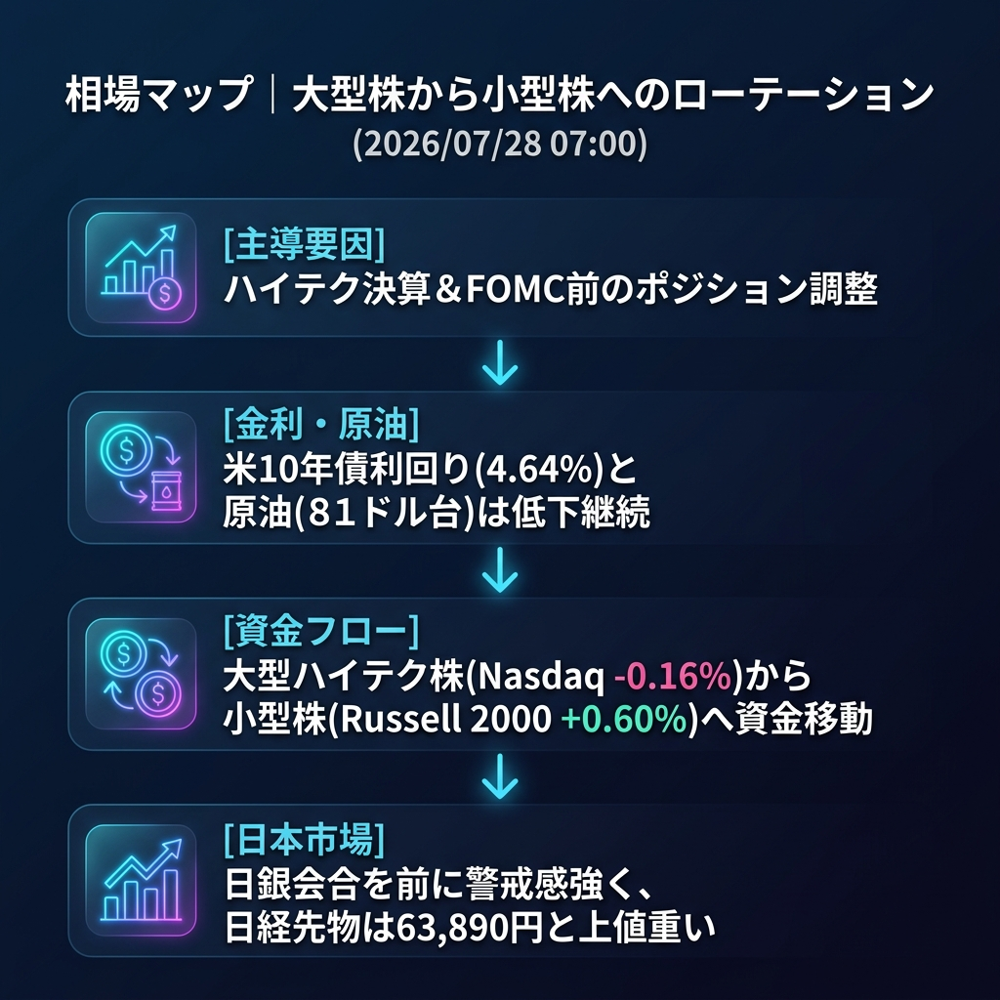

中東情勢の緊迫化一服により原油安・金利低下が進むも、ハイテク株の上値は重く「ディフェンシブ・小型株（Russell 2000）」への資金シフトが鮮明に。
「地政学プレミアム剥落後のセクターローテーション」と、ハイテク決算を控えた様子見姿勢。
「米イランの軍事衝突一時停止」を受けてリスクオン急伸となった前日欧州時間〜NY序盤の熱狂から一転し、引けにかけては利益確定売りが優勢となりました。ただし、原油安（インフレ懸念後退）と米金利低下（4.64%へ低下）のトレンドは継続しており、資金はハイテク株から出遅れていた小型株（Russell 2000）や景気敏感株へと向かっています。
| 指数・銘柄 | 終値・値 | 前回比 | 騰落率 | 備考 |
|---|---|---|---|---|
| Dow (YM=F) | 52,417.0 | +35.0 | +0.07% | 景気敏感株が支え |
| Nasdaq (NQ=F) | 28,144.0 | -46.0 | -0.16% | 大型ハイテク決算前で上値重い |
| S&P 500 (ES=F) | 7,447.0 | -1.25 | -0.02% | ほぼ横ばい |
| Russell 2000 | 2,948.03 | +18.04 | +0.60% | 小型株への資金流入が鮮明 |
| 日経225現物 | 64,931.19 | +320.04 | +0.50% | 前日の東京大引け |
| CME日経225先物 | 63,950.0 | - | - | 円建て。米国株の伸び悩みに追随 |
| 日経225先物（OSE） | 63,890.0 | -165.0 | -0.26% | 64,000円を割り込んで引け |
| USD/JPY | 163.742 | -0.049 | -0.03% | 米金利低下も、底堅いもみ合い |
| EUR/USD | 1.1373 | -0.0002 | -0.02% | 1.13台後半で膠着 |
| 金 | 4,075.1 | -1.9 | -0.05% | 4,100ドル手前で足踏み |
| 原油 | 81.87 | -0.74 | -0.90% | 地政学リスク後退で続落 |
| BTCUSD | 64,062.5 | -1,270.6 | -1.94% | リスクマネー流出が継続 |
| VIX | 19.38 | +0.80 | +4.31% | 引けにかけて上昇 |
| 米10年債利回り | 4.641% | -0.038 | -0.81% | インフレ懸念後退で着実に低下 |
| Fear & Greed | 39.4 | +0.6 | - | 「Fear（恐怖）」水準で停滞 |
原油安・金利低下という「株高材料」が揃っているにもかかわらず、ナスダックがマイナス圏で引けた点は、今週発表予定のメガテック決算やFOMCへの警戒感が強く影響しています。材料と値動きの乖離は「イベント前のポジション調整」として整合的です。
米金利（債券市場）とRussell 2000（小型株）。金利低下を好感する資金が大型株から小型株へ還流しています。
原油市場から流出した資金は、米国債（金利低下）とRussell 2000へ向かっています。一方、BTCや大型ハイテク株からは利益確定の売りフローが観測されており、典型的な「セクターローテーション」が起きています。
日銀会合に向けた「追加利上げ確実」等の観測報道が入り、円急騰（ドル円急落）と日経平均のパニック売りが同時発生した場合。